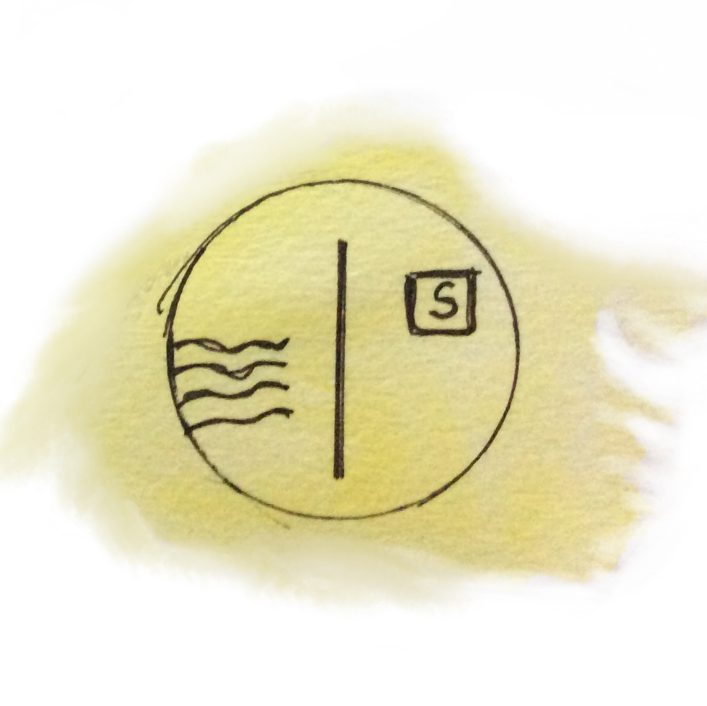
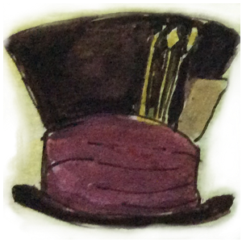
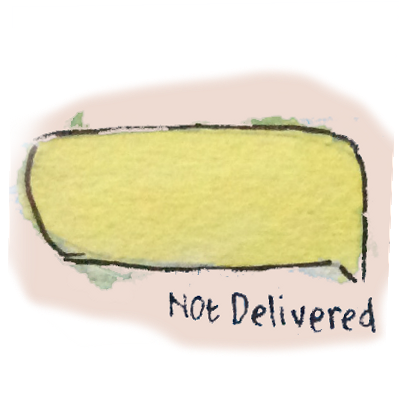
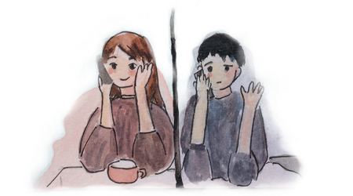
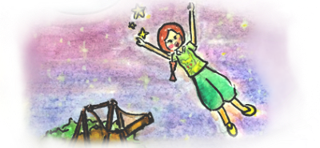
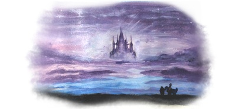
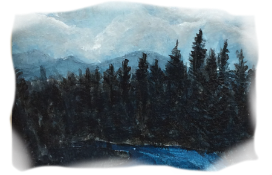
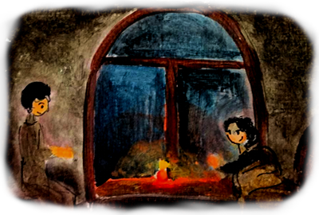

Kehidupan berlanjut. musim dan perayaan telah berulang tapi Pandemik ini masih saja memburuk, sialnya satu-satunya kisah romansaku ialah jatuh cinta pada karakter fiksi, sampai seorang pria dari internet mengirimkan surat elektronik.

Januari 2021 menjadi awal tahun penuh keraguan dan kelesuan bagi seluruh warga dunia, tidak ada resolusi optimis bertebaran di media sosial, hanya ada berita buruk dan doa.
Pandemik ini sudah berlalu setahuan lamanya dan masih menjadi hantu bagi para pencari nafkah, menjadi musuh dari para tenaga medis. Aku kira kicauan di media sosial tidak kalah bising dari apa yang diberitakan media lokal soal pemerintah, kasus korupsi dana bantuan sosial dan orang-orang yang dibutakan teori konspirasi.
Riuhnya media sosial berkebalikan dengan hidupku yang sepi. Dulu aku pernah berharap agar bisa punya waktu sendiri dan lebih memikirkan hidupku yang hendak dibawa kemana, tak sangka terkabul dengan putusnya hubunganku dengan Dimas pada pertengahan Februari tahun lalu. Sebuah hubungan yang setengah hati aku jalani karena Ibu yang mengenalkanku. Ini adalah momen dimana akhirnya aku bisa punya banyak waktu sendiri untuk melakukan hal yang aku suka dan bertemu orang baru, tapi yang aku dapatkan adalah kenyataan bahwa semua harus mengisolasi diri untuk jangka waktu yang tidak jelas, terjebak bersama kesepian yang tidak berujuang.
Malam itu listrik padam, hanya aku dan koneksi internet di hpku, aku menemukan beberapa aplikasi yang menarik, salah satunya aplikasi bertukar surat elektronik, sebuah virtualisasi surat melalui jasa pos.
Orang-orang yang dipertemukan oleh program komputer untuk bertukar sapa secara anonim terkadang jadi lebih terkoneksi secara jujur dibandingkan teman bertahun-tahun disisi lain kubikel kantor.
Begitu awal surat pertama darinya. Oh ya, namaku Sara, karyawati tahun kedua di kota Bogor, hobiku bersepeda, orang bilang aku ambisius dan sedikit aneh. Tapi sejujurnya aku adalah orang yang cepat bosan.
Surat pertamanya menceritakan tentang karir dan kebosanan di masa pandemik sebuah awal menarik untuk username yang membosankan, "internetdude".
Apa yang terjadi kemudian adalah diluar dugaanku. Ia memang menarik seperti surel yang dikirimkannya setiap hari, hal-hal ringan dan tidak menyinggung kearah romansa kotor kebanyakan di Internet, ketulusan bercerita dan menanggapi caritaku sebagai seorang teman. Maksudku, kami bercerita mengenai semua hal dari lagu, kuliner dan tempat kesukaannya di kota kami. kota hujan yang katanya tercipta dari sendu tapi sering juga terasa syahdu. hari demi hari suratnya selalu menjadi bagian dari hariku, semua tentangnya menjadi sangat menarik sekarang.
Kami juga mengeluhkan buruknya media sosial saat ini untuk kesehatan mental masing-masing, kami berbagi pengalaman soal menjadi orang dewasa muda, berbagi harapan untuk pandemik segera berakhir.
Saat itu, rasanya tidak perlu bertemu atau menjadi bagian dari daftar temannya di sosial media untuk bisa saling terhubung. Aku merasa nyaman dengan konsep sahabat pena.
Satu hari sampaikan harapanku ingin seperti ini terus. "Menjadi anonim, teman tanpa nama" tulisku dalam penutup surat. Malam demi malam berlalu dengan tumpukan pekerjaan di layar monitorku, yang tidak aku sadari sebenarnya surat darinyalah yang membuatku gelisah menunggu.
Dalam sesi pertemuan virtual kantor siang itu, notifikasi dari Aplikasi surel ini membuyarkan fokusku. aku periksa layar ponselku. Ada namanya dalam baris notifikasi. Dengan senyum-senyum kecil,aku berusaha menyelesaikan pertemuan virtual segera mungkin.
Surat darinya adalah hal terbaik di hari itu pikirku, aku berusaha mengatur nafasku yang terlalu bersemangat, dari layar kulihat Aldo dan Nina sedang bergeleng-geleng sambil tertawa kecil, aku yakin itu untukku meskipun tak mengerti apa maksudnya.
Mengenai pria di Internet ini mereka sudah bosan mendengarkan semua ceritaku, sangat bosan kalau menurut Nina. Aku selalu bersemangat membicarakan kembali tempat makanan di Jakarta dari rekomendasinya, anime lawas yang ia tonton, musik kesukaannya dan buku yang berusaha dibacanya.
Membaca sapaannya pada pembuka surat seperti nampak jelas ekspresi seseorang yang aku rindu di sisi sana, aku sadar sekali hari itu, aku rindu cerita dia, pertanyaan dia, hal-hal konyol dan kucingnya. Namun, akhirnya aku tahu bahwa surat panjang itu diakhiri dengan ucapan terima kasih dan permohonan pamit.
"Pamit?" tanyaku dalam hati mulai kacau. alasan pamitnya pun kurang meyakinkan, karena dia tidak lagi tertarik menggunakan aplikasi ini. dilain sisi, memang tidak semua orang cocok untuk bertukar surat.
"Semoga kamu menikmati masa-masa 20an ini dan bertemu orang yang pas suatu hari nanti yang tidak telalu lama"
"Ada apa sih?" tanyaku dalam hati. Untuk ukuran orang yang tidak aku kenal, aku merasa kehilangan. Aku sadar tidak boleh berharap banyak pada orang di dunia maya.
Aku curahkan perasaan kecewaku dalam beberapa kata, rasa terima kasih atas cerita dan waktu yang diberikan dan juga permohonan maaf. Aku sadar hal seperti ini bisa terjadi dalam dunia virtual. yang tidak aku tahu bahwa akan secepat ini, entahlah satu bulan bertukar pesan adalah waktu yang sangat lama juga pengalaman pertama.
"Bisa aku tahu Podcastmu?” tanyanya dalam surat balasannya kemudian.
Ya sebagai orang yang cepat bosan memang aku suka mencoba banyak hal termasuk membuat Podcast tapi kenapa harus tanya catatan memalukanku ini sih rasanya risih dan juga malu. Namun, aku sadar aku masih penasaran dengan pria ini, lalu aku membalasnya dengan memberikan username akun sosial mediaku dan permainan anonim menggelikan ini pun selesai.
30 menit adalah waktu yang diperlukan agar suratku sampai ke tempatnya, tak sangka kemudian ada notifikasi baru bahwa dia membalas suratku beberapa saat kemudian. Sebuah perjalanan surat virtual yang harus aku tunggu selama 30 menit lamanya untuk bisa tahu apa kiranya yang ia tulis. Baru ku rasakan 30 menit yang teramat lama. ada pertanyaan dalam hatiku, mengapa dia perlu membalas suratku lagi? bukankah telah aku kirimkan akun sosial mediaku yang seharusnya bisa dia gunakan untuk menyapa disana atau jika memang tidak mau, ya tidak perlu menghubungiku lagi.
Sesungguhnya, dalam hati aku berharap semoga ia tidak jadi menutup akunnya.
"Hey, I just want to make sure that I don't comfortable meeting in person, I am also an Introvert. is that ok? if so, I will reach you"
Apa-apaan ini? Ada perasaan bingung dalam diriku dengan pertanyaannya ini, bertemu? sejak kapan aku bilang ingin bertemu? tapi yang lebih buatku penasaran kenapa dia tidak mau bertemu denganku? apa karena ia intovert? terlalu keren buatku? siapa sih orang ini? saat itu semakin bertumpuklah rasa penasaranku tentangnya.
"Calm dude, I never imagined meeting strangers on the Internet before, just let's be virtual friends, See you!" Jawabku dalam surat terakhir.
Aku tidak menyangka keputusanku akan mengarahkan aku pada pengalaman yang paling ku hindari.
Jatuh cinta.
Awalnya aku kira kenalan di Internet hanya dipenuhi Cowok Geek yang tidak punya kehidupan nyata yang menyenangkan atau Cowok Creepy yang punya motif khusus. Tuhan mengirimkan orang lain, dia memang menarik, namanya mengingatkanku pada cinta pertamaku di masa SMP. aku tidak bilang dia terbuka, tapi karena kami cukup dapat dikatakan kaum introvert, kami bisa berkomunikasi . aku terkesan pada pandangan pertama. bertukar pesan dengannya membuatku bahagia, rasanya menjadi anonim selamanya dengan orang ini adalah keputusan yang sangat bodoh untunglah dia mengirimkan surat pamitan itu.
Aku juga baru sadar bahwa selama ini menggunakan bahasa inggris padahal sama-sama orang sunda.
Setiap malam kami bertukar obrolan dan tak terasa setiap itu waktu berlalu dengan cepat dan kami selalu akhiri dengan bertukar ucapan selamat malam, begitu juga untuk malam-malam lainnya.
Terkoneksi dengan berukar cerita masa-masa sulit, kekonyolan diri, kegemaran, impian hingga humor tergaring yang pernah didengar adalah hal tebaik yang pernah aku rasakan.
Aku pernah punya orang yang dekat denganku biasanya lebih tua dan lebih muda dengannku, mereka seperti kakak dan adik, tapi orang ini berbeda dia seperti teman yang ingin aku temui.
"Sial" aku mengumpat dalam hati. dia kan tak ingin bertemu. sialnya orang ini semakin membuatku penasaran dan membayangkannya dalam hariku.
Persis seperti tokoh Anime favoritku Sharon Lee dari Card Captor Sakura. Aku mulai membayangkan betapa sempurnanya orang ini untukku, dia Sharon Lee punyaku. Langit-langit di kamarku menjadi sangat berwarna malam itu, lagu-lagu menjadi tentang dia. semalaman aku terjaga dalam lamunan dan skenario tentangnya di hidupku.
Dia seperti teman misterius di dunia wonderlandku. Dia sering memberiku pandangannya tentang hal-hal yang aku alamai membuatku lebih baik lagi melihat dunia. Aku tenggelam dalam imajinasiku sendiri.
Imajinasi seorang wanita.
Aku bukan pecinta binatang, tapi aku suka melihat video tingkah lucu bintang Internet ini. Aku selalu suka para pecinta binatang seperti adik dan ibuku.
Adikku sangat menyayangi Kino Kucing kampung yang selalu datang setiap hari. melihatnya akrab dan bermain membuatku senang sendiri. Kino punya 3 saudara kandung dan ibu kandung.
Beberapa hal tentang kucing mengingatkanku tentangnya.
Dia yang sangat menyukai video kocak kucing di Internet dan dia yang bercerita tentang kucing Jalanan piharaannya atau cerita tentang kucing jalanan yang lehernya dilakban orang iseng yang membuatnya bad mood.
Ada hal yang membuat aku selalu kagum pada pecinta binatang, mereka tulus tanpa mengharapkan apapun.
Satu hari dia bertanya apakah aku 'cat person'?.
Ada hal yang membuat aku selalu kagum pada pecinta binatang, mereka tulus tanpa mengharapkan apapun.
Satu hari dia bertanya apakah aku 'cat person'?.
Kucing bagiku adalah sekelompok peliharaan yang malas jika majikannya terlalu memanjakan, Dulu, di rumahku kucing dipelihara untuk berburu tikus di gudang atau di loteng, bukan jadi pajangan atau bahkan teman.
Aku pernah punya kucing yang diberi nama Ken, garis keturunannya sepertinya lebih serius dibandingkan aku, bulunya yang putih dan lebat membuat semua orang gemas, tapi tidak dengan ayahku, Ken yang sepertinya kucing rumahan tak juga ditemukan oleh pemiliknya selama lebih 3 bulan ini, sudah menjadi kucing penuh muslihat di rumah kami.
KEN si pemburu mahir dari tikus rumah hingga masakan ibu. Ia jadi kesayangan ayahku pada akhirnya. Nama ken sendiri bukan dari nama Pacar Barbie, tapi diambil dari nama Kensin karena ada baret di dekat matanya hasil berkelahi dengan kucing lain di belakang rumah. Entahlah Masalah cowok.
jadi, apakah aku cat person?
"tergantung" jawabku, tidak ada yang seperti Ken.
Aku melanjutkan cerita, tidak terasa ken sudah hampir setengah tahun bersama keluargaku, sore itu ia diajak ngabuburit naik motor ke taman yang disulap menjadi pasar kaget bersama ayahku, ayah sangat senang menggendong ken kesana kemari.
Lalu, seorang remaja dan seorang gadis kecil yang sepertinya adalah adiknnya menghampiri aku dan ayahku, dia melihat ken seraya berseru "Nini? !"
Ken pun langsung menghampiri remaja itu tanpa keraguan diikuti oleh gadis kecil itu.
Sambil mengusap-usap Ken, pria itu memberikan penjelasan kepada ayahku, aku tidak begitu perhatikan percakapannya, tatapanku tertuju pada si kucing Ken yang sedang dielus elus oleh gadis kecil itu kembali menatap remaja itu lalu begitu saja berulang kali sampai percakapan itu berakhir, aku memberikan pelukan terakhir pada Ken.
"jadi Ken itu betina ya yah?" Membuka obrolan dengan ayah di motor dijawab dengan tawa ayah geli. Kembali tanpa membawa pulang Ken alias NIni. Sejak saat itu aku tidak punya kucing selain kucing jalanan yang sering datang untuk menagih makan siang dari ibu.
"Mungkin aku lebih ke dog person deh, karena aku gak akrab sama kucing lain" jawabku melanjutkan.
"Yakin?" tanya jo tidak yakin.
"Anjing itu menyenangkan, bisa diajak berlari dan rasanya lebih aktif dan peduli sama majikannya, waktu pamanku menitipkan Bruno seharian aku benar benar dihantui wajah Bruno tau ga" Jo semangat menjelaskan.
"Bruno yang selalu di hadapanku siap mengajak bermain, mukanya seperti bertanya apa kabar seribu kali dalam sehari, gila ga?" kata Jo meminta konfirmasi.
"Dia nungguin aku keluar dari toilet, belum lagi gonggongannya yang bikin aku harus minta maaf ke tetangga, repot deh. aku bener bener dihantuin sama tatapan penuh adrenalin dia.. hiiih!" lanjutnya begidig
Aku cukup terhibur dengan cerita bruno yang merusak hari Jo, aku juga akan kesal jika seharian harus dihantui anjing yang terus ingin bermain, rasanya seperti jadi baby sitter ponakan sendiri.
Sesuatu soal Kucing dan Jo akhirnya aku bisa menemukan kesamaan. Jo itu seperti kucing selain profil picture bergambar kucing yang terkadang membuatku seperti berbicara dengan kucing siluman. aku akui kucing itu pemalas, manja dan sedikit jorok tapi disisi lain dia pintar, menggemaskan, menyenangkan dan tidak mengganggu ketenangan. Aku juga pernah ceritakan seorang ibu tua yang memiliki banyak kucing yang sering ia penggil "Anak-anakku". ibu itu kesepian dan kucinglah yang membuat hari-hari sang ibu tua ini sangat nyaman. Jo juga seperti itu dan dia membuatku merasa nyaman sebagai teman.
Aku sering kesal sendiri dengan kenyataan terkurung di dalam indekos sendiri karena Pandemik ini. Namun, kali ini mengapa aku lebih merasa tersiksa dengan jarak. Padahal, tempat tinggal kami ada dalam satu kota yang sama, tak butuh setengah jam untuk bisa bertemu, tapi rasanya sangat jauh seperti ada batas yang tidak terlihat menutup jalanku menemuinya, batasan yang dia ciptakan kami sendiri untuk tidak bertemu denganku.
Seperti kucing jalanan, sikapnya kadang membuatku bingung. Kadang dia cuek, kadang sangat needy, menyenangkan dan berakhir menghilang. Suatu hari, aku biarkan pertanyaannya tak aku jawab berhari-hari, harapku dia menyapaku. tapi tidak.
Namun karena saking jengkelnya akhirnya aku jawab juga, tapi tidak ada tanda bahwa dia akan menyapaku suatu hari nanti. semuanya selalu aku yang memulainya. seperti profil picturenya, kucing yang harus banyak dimaklumi.
Aku pernah berusaha mendapatkan perhatiannya, bahkan dia tidak pernah membahas podcast terbaruku lagi, sebuah pertanyaan yang ia ajukan yang membawaku lebih mengenalinya. sebuah episode baru yang aku buat tentangnya yang tentu saja dia tidak tahu.
Aku mulai kesal dengan perasaan yang dibatasi ini, aku yang tidak mengerti sikap dia membuatku bertanya dan terus penasaran.
Seperti ibuku yang menunggu kucing untuk jatah makan siangnya, ironinya ibuku tidak pernah menunggu, Ibu menyiapkan makanan saja. sedangkan aku menunggunya dengan penuh harap, hari demi hari aku hitung dari chat dan jam terakhir kami saling berbagi cerita.
Perasaan campur adukku ini ditambah dengan caranya menghilang tiba-tiba meninggalkan pertanyaanku yang tidak terjawab, apakah benar, dia sedang sibuk atau apakah ada masalah? atau apakah aku sedang dipermainkan?
Setengah mati aku penasaran tentangnya, tentang dia yang belum pernah aku temui.
Menghilangnya berlanjut menjadi hilang yang panjang.
berakhir dengan status pesan "read"
Pagi itu sinar mentari sudah menembus gorden jendela kamarku. Aku bisa merasakan sinarnya tanpa perlu membuka mataku yang sembab karena menangis semalaman, kurapihkan meja kerjaku dari tisu dan cat air, sebuah lukisan gadis yang tertidur di padang bunga membuat hatiku terenyuh, aku terbiasa melukis untuk memproses perasaan. Ada perasaan lelah saat aku memegang buku harianku.
“How can i miss someone i've never met” tanyaku pada buku harian berharap ia memberi jawaban.
Sungguh, ini terasa konyol dibalut dengan rasa jengkel bukan main, perjalanan ke kantorku aku isi dengan lamunan.
Saat menunggu lift, kuperhatikan seorang pria paruh baya sedang bertelepon, rona bahagia di pipinya dan gombalannya menarik perhatian orang sekitar, seorang ibu dibelakangnya bahkan tak bisa menahan tertawa gelinya, tapi ia tak menghiraukannya, ia terus melemparkan gombalan untuk sang kekasih di ujung telpon sana.
Saat menunggu lift, kuperhatikan seorang pria paruh baya sedang bertelepon, rona bahagia di pipinya dan gombalannya menarik perhatian orang sekitar, seorang ibu dibelakangnya bahkan tak bisa menahan tertawa gelinya, tapi ia tak menghiraukannya, ia terus melemparkan gombalan untuk sang kekasih di ujung telpon sana.
Aku masih melihat senyum-senyum kecilnya yang tidak bisa hilang disaat sambungan telepon harus terputus di dalam lift, tak sabar agar segera keluar, kiranya aku tahu saat itu bahwa semua perasaan itu selalu nyata. bahkan perasaanku soal orang yang tidak pernah aku temui ini. meskipun aku tak tau perasaannya setidaknya aku sadar akan perasaanku. Jantungku jadi berdebar khawatir dan berharap ini bukan rasa sayang.
Aku tidak bisa berhenti memikirkan balasannya hingga di malam-malam itu aku terbangun dengan sebuah mimpi dering notifikasi dan pesan masuk di layar ponselku, sebuah pesan hangat seperti biasanya, tapi aku tak tahu apa isinya. dengan jantung berdebar aku terperanjat dan membuka ponselku,
"tidak ada pesan"
Aku kaget dengan responku sendiri, aku merasa terhina dan kesal. Merasa dipermainkan dengan halusinasiku sendiri.
Malam itu aku kecewa pada diriku sendiri. Aku bisa katakan dia seperti tokoh fiksi yang membuatku membuka halaman baru terus menerus atau tokoh dalam series mingguan yang membuatku gemas penasaran.Sayangnya aku tidak punya kendali apapun untuk memenuhi rasa penasaranku, aku hanya bisa menunggu halaman selanjutnya terbuka dan episode selanjutnya rilis.
Perasaan manusia itu seperti sumur yang dalam, kita tahu di dalam sana ada sesuatu yang ingin kita tarik kepermukaan.
Bahkan aku tidak tau dimana sumur ini berada
Sabtu malam dengan secangkir teh hangat di meja kamarku, aku membaca kembali surat yang pernah ia kirimkan, mungkin ada clue dari menghilangnya. aku sadar betapa aku jatuh cinta dengan surat-suratnya.
Jujur, aku gila menunggu suratnya. Ada pikiran waras yang berusaha keras menyadarkanku dengan mantra 'kamu hanya ingin berteman, tapi dia buatku bertanya dengan cara menghilang'. Ya, dia membuat semuanya menjadi menarik dengan membuatku merasa penasaran, tapi aku sadar betul saat ini aku tidak bisa membedakan mana rasa rindu dan penasaran apa lagi sayang.
Ponselku berdering oleh pesan masuk dari Ardi, teman yang selama ini menghibur rasa sedihku dengan omelannya. menghiburku meski aku enggan lagi bercerita soal kekonyolan kisah virtualku ini. Malam itu kami mengobrol panjang tentang finansial hingga nostalgia masa kecil kami, saat aku masih menjadi bocah kelas 1 SD hampir tiap hari dititipkan padanya, anak kelas 4 SD yang tinggal tepat di depan rumah orang tuaku untuk berangkat sekolah bersama, cukup aneh takdir kami selalu bersama hingga bisa bekerja di kantor yang sama. Saat kuliah di universitas yang sama orang tuaku selalu menitipkanku padanya bahkan sampai Ardi punya uang jajan sendiri dari orang tuaku.
Dimataku Ardi cukup pintar meskipun terkadang plin-plan dengan keputusannya, dia bisa menjadi sangat konyol tanpa perlu berusaha. Karena kedekatan kami, terkadang aku yang harus mengingatkannya untuk disiplin bangun pagi dan tegas dalam pilihan hidupnya termasuk dalam hal romansanya. Pacar terakhirnya adalah sahabatku, Lara. Mereka putus sekitar 2 tahun yang lalu, tentulah terkadang aku sendiri yang harus menemaninya kemana-mana. Tapi perasaanku padanya hanya sebatas teman, bahkan terkadang menyamakannya dengan sepupuku yang lain.
Dalam keseruan obrolan kami, tiba-tiba kesunyian hadir disambung kesunyian yang panjang setelah aku menceritakan rasa gelisahku belakangan ini, tentu yang Ardi sudah tau apa alasannya.
Tidak juga mendengar suara dari sisi sana, aku mulai mengomel tentang kualitas internet kosanku karena tak juga mendengar suara dari ujung sana. sebelum aku lanjut omelanku, di ujung sana, sebuah nyanyian lembut membuatku termenung.
Sebuah lagu to be with you dari Mr. Big, dia sangat menyukai lagu-lagu lama. Dia sering mengejek selera musikku yang terlalu mengikuti tren. Malam itu aku berterima kasih padanya, membuatku ikut bernyanyi dan mendengarkan kisahku dan pria di internet sana. bercerita tentangnya adalah hal yang menyenangkan seperti aku sedang melukis karakternya.

"Di?" sautku bingung karena tidak ada respon apapun saatku bercerita.
"Wah kamu tidur ya?" tanyaku jengkel tapi tidak ada juga respon.
“Kalau aku hilang, kamu bakal nyariin gak ya?” tanya Ardi yang menyambung kesunyian dengan kesunyian baru.
Aku merasa tidak enak dengan pertanyaanya, aku berusaha mengalihkan dengan kejadian lucu di kantor kemarin sore, tentang aku yang salah sangka mendapatkan bunga ternyata itu untuk atasanku.
Kami saling mengucapkan selamat malam untuk menutup obrolan agar bersiap kembali bekerja di kantor Esok hari.
Namun Esoknya, Ardi tidak menyapaku sama sekali. aku menghela nafas dengan payah, aku tahu ada yang tidak beres.
Aku sempat curhat dengan sahabat SMAku yang sedang mempersiapkan pernikahannya beberapa hari sebelumnya, Ana namanya. awalnya Ana senang melihat aku memiliki kemajuan karena bisa terbuka dengan orang baru dengan niatku sendiri, tapi kemudian ia ragu.
"kenal dengan orang dari Internet, tanpa membangun kedekatan nyata, rasanya belum kenal deh Sar, aku pikir sekarang ini kamu hanya sedang memproyeksikan dia Sar" ucap Ana yang membuatku mempertanyakan kembali sikapku.
Ana juga menanyakan perihal Ardi. aku jelaskan bahwa aku dan Ardi tidak memiliki ekspektasi dalam hal romansa, tapi Ana hanya mengiyakan dengan ragu seraya berpesan di ujung obrolan siang itu.
"Jangan terlalu berharap ya, aku takut kamu sakit" ucap Ana padaku. Sambil menatap Ardi yang sedang bekerja dari mejaku aku sadar bahwa kami tidak pernah berbicara soal ini. ada perasaan canggung, geli dan aneh. Ardi sudah seperti sepupuku sendiri.
Aku menarik nafas dalam-dalam dan kembali bekerja.
Tak kusadari, Ardi mencuri pandang juga ke arahku.
Aku kira sebuah balasan dari Jo suatu hari nanti akan melukaiku, menghancurkan ekspektasi dan fantasi yang sudah menjadi gedung tinggi ini.
"Sometimes being ghosted is better than being forced to face the truth, i just couldn't help crushing on you Jo" tulisku dalam buku harianku, akhir-akhir ini aku sering menulis bahkan menggambar. dua hal inilah yang aku lakukan ketika sedang merasakan perasaan yang kuat.
Biarkanlah aku menjadi egois menyimpan ide tentang aku yang takut rasa suka ini berakhir menjadi rahasia seperti ceritaku dan anak Akselerasi di bangku SMP.
Ia Ryan, anak seumuranku. waktu itu jam 12 siang setelah sholat dzuhur aku pulang bersama teman sebangkuku, namanya Lina. kami sedang dalam angkot yang menunggu penumpang, ada dua orang anak laki-laki yang mengalihakan perhatian kami. satunya anak berkacamata duduk di samping supir, satunya lagi cowok manis yang terus bergurau seperti tidak pernah kehabisan bahan, Ryan.
Beberapa menit berlalu, Lina pamit pulang, karena angkot sudah sampai tepat didepan rumahnya yang besar dan Heli si anjing Golden Retriever yang mengingatkannku pada film anjing "Air bud" berlari menghampirinya.
Akupun memalingkan wajah ke jendela yang setengah terbuka dan sesekali mencuri pandang ke arah dua anak laki-laki ini yang obrolannya terdengar oleh seisi angkot.
"Kiri !" sautku dan Ryan bersamaan. Ryan menoleh kebelakang, begitu juga dengan temannya. begitu juga aku melihat mereka kaget.
Perlu sekali lagi naik angkot untuk sampai ke rumahku, angkot berwarna biru tua yang sangat lama menunggu penumpang penuh. aku duduk di bangku paling belakang seperti biasa, mulai membuka komik untuk membuang waktu.
kemudian Ryan sudah duduk dihadapanku. Sialnya, hanya baru kami berdua saja di dalam angkot butuh waktu beberapa belas menit agar mobil ini mulai berjalan.
Aku berubah menjadi kaku, aku berusaha menutup wajahku dengan rambutku dan juga komik yang aku pegang, sepanjang jalanpun aku hanya berusaha membaca komik yang jadi susah dicerna itu, terlebih muatan angkot hari itu padat membuatku gerah.
Aku jengkel sendiri kenapa harus dalam kondisi seburuk rupa ini, bahkan untuk ngobrolpun jadi tidak mungkin karena saking tidak nyamannya.
"Kiri !" sautnya beberapa saat kemudian membuatku melihatnya seketika
"Duluan ya!" ucapnya.
"oh iya" jawabku spontan. Aku tahu dimana ia tinggal, tapi aku tidak tau dia siapa.
Itulah hari dimana aku terjebak dalam fiksasi cinta versi anak SMP, sayangnya karena ilmu soal relationshipku hanya sebatas komik dan film korea akhirnya aku hanya menyukai orang ini selama bertaun-taun.
Sampai pada usiaku 21 tahun dia menikah, bahkan saat itu belum ada satupun sahabatku yang menikah, mana mungkin aku bisa pikir bahwa dia akan menikah semuda ini.
Aku melihat fotonya dengan pakaian putih pengantin sedang melakukan ijab kabul, rasanya itu patah hati besar, meskipun aku tidak pernah mencarinya lagi setelah aku kuliah. aku tidak menyangka ada penyesalan tentang perasaan yang berakhir rahasia untukku, aku mengingat momen momen dimana kami pertama bertemu.
Di angkot dengan seragam batik biru sekolah.
Di tepi lapang waktu pagi dimana hanya ada aku dan dia saja yang tak sengaja bertukar pandang.
Di lorong kelas saat temanku menyebut namanya dari lantai dua kemudian menunjuk kearahku.
Di podium sekolah saat pentas drama SMP, aku setengah mati malu berperan menjadi hantu di hadapan dia yang ada dibarisan terdepan.
Dia yang menjadi salah satu alasanku ingin masuk ke SMA yang sama.
Di ruang kesenian SMA, ia berada di sudut gedung melihatku menari teatrikal yang entah mengapa membuatku menjadi juara.
Dia yang pernah aku kirimkan permintaan berteman di facebook dan aku putuskan beberapa hari kemudian karena aku sadar aku sangat alay dengan segala hal tentang anime dan otaku yang aku ragu dia akan suka.
Di saat aku menolak cinta seseorang karena tidak bisa membuka hati juga diminggu yang sama dimana aku melihatnya berboncengan dengan seorang gadis dengan tas bahu pink yang kini menjadi istrinya.
Dari aku menemukan sosoknya kembali di internet dan pengumuman resepsinya sampai kini semua hal tentangnya di internet macam dimakan lubang hitam tidak ada yang bisa menemukannya.
Hal terburuk yang bisa aku pikirkan adalah penolakan dan rasa insecure terhadap diriku yang tidak pernah merasa cukup, tentang aku yang tidak benar-benar mengerti dia, bahkan tidak berusaha mengenali.
Namun, aku menemukan perasaan lebih buruk dari yang terburuk adalah tau bahwa orang yang aku suka memang tidak pernah bisa membuka perasaan yang sama dengan kita. Saat aku sadar dia berusaha membuat jarak saat aku mulai jatuh hati
Perasaan terburuk itu sedang aku rasakan.
Waktu kecil aku kira romansa itu mudah, tapi tidak, kenyataannya Snow white pun tidak bangun dari kematiannya, bahagia selamanya itu tidak pernah ada.
Semenjak orang yang aku taksir di masa sekolah menikah. Aku ingat dulu, aku kira ujungnya akan seperti film remaja " little crazy thing called love" yang aku tonton saat duduk di bangku SMP, dimana 'true love will find you in the end' tapi ternyata kenyataannya tidak. Aku masih bisa menangis saat menyendiri atau spontan bercerita secara anonim melalui kanal jejaring sosial anonim, ketika perasaanku sangat meluap, aku pernah memimpikannya. di suatu malam aku menghubunginya melalui pesan, aku menanyakan perihal produk yang dia jual entah apa, aku menunggu balasannya dengan menatap dengan seksama kolom chat yang berwarna latar belakang hitam, aku menunggu dan menunggu, aku bisa merasakan bahwa hatiku sedang bersedih. Kemudian sebuah tanda dari ujung sana sedang menulis pesan, hatiku berdebar lalu ku baca dengan diawali permohonan maaf karena membuatku menunggu, dia harus mengurus kedua anaknya dan dilanjutkan menjelaskan produknya, layarku mati dilanjut dengan kegelapan yang memakan seluruh ruangan. aku terbangun dari mimpi itu dan mulai menangis.
Bagian yang paling menyenangkan adalah ada orang yang pada akhirnya akan kita temui dengan kualitas yang sama dengan kita. Selepas SMA Aku telah belajar bahwa mengatasi rasa tidak amanku dengan meningkatkan taraf hidup, baik secara finansial, fisik maupun mental . ini semua telah membantuku maju dan bertemu lebih banyak persahabatan di sepanjang jalan dan menemukan hal-hal baru yang aku suka. Aku sadar betapa senangnya dulu bisa bertemu dengannya meski tidak pernah saling memiliki. kami terpisah banyak hal setelah SMA, aku tidak berpikir bahwa akan mengalami pertumbuhan pribadi sebanyak ini setelah berhenti mengharapkannya.
I hope one day, we can talk again and we can be okay with all that has happened. not today or tomorrow, but someday when peace in our heart.
I know I will.
Thank you for everything,
“Hey, apa kabar?” sebuah pesan muncul dari layar ponselku. Saat itu rasanya seperti pesan dari planet lain yang sudah aku tunggu setiap saat, sebulan lamanya, ada perasaan terharu dan bersemangat.
"Maaf baru bales, sumpah deh kelewat chatmu" tulisnya kemudian ditambah emoticon menangis yang menambah kesan imut.
Dalam hatiku terfikir mengenai 'terlewat' aku memang bukan prioritas, kenapa harus aku menuntutnya? . aku mengabaikannya dan mulai mengobrol kembali.
Saat itu rasanya semua hal menjadi berwarna. dia tetap sama kembali dengan cerita kesibukannya dan jam tidur yang berantakan. tentang kucing dan kota Bogor.
Satu menit berlalu bahkan kami belum genap 10 menit terhubung bertukar pasan dan layar ponselku menguji kesabaranku dengan notifikasi facebook dan pesan provider yang mengganggu kewarasanku..
Aku menggerutu kecil dan mengambil air minum keluar kamar.
Menit berlanjut, aku sadar tidak akan ada pesan masuk lagi. Aku mulai menyadari satu hal, dia adalah orang yang suka menghilang tiba-tiba.
Hidup penuh warna yang tak lama kemudaian kembali berubah sepia saat dia menghilang meninggalkan pertanyaanku tanpa jawaban.
Mengapa dia tidak bisa menjadi teman belajarku saja, atau teman penaku kembali, apakah aku ini memang tidak pernah jadi teman untuknya? mengapa orang sangat mudah untuk datang dan pergi? atau ini masalah ekspektasi yang berbeda.
Sesekali aku jengkel dengan pikiranku sendiri, mungkin dia bertemu orang lain atau membayangkan sebuah kemungkinan bahwa dia sedang menyiapkan pesta ulang tahun atau menikahi orang lain. dilain hari aku menjadi sangat berharap dan di waktu lain di kota hujan ini aku sendu.
Kali ini aku menghubungi Ardi ditengah malam berharap dia bisa mendengarkan curahan hatiku.
"Jujur, kalau aku jadi kamu, aku bakal frustrasi dan akan hilang minat sama orang kayak gitu. Perhatian dan waktu sangat berharga buatku. Jadi aku gak akan menyia-nyiakannya sama siapa pun yang tidak menghormati itu." Kalimat pertama Ardi setelah aku bercerita banyak tentang yang aku rasa.
"Aku gak nyangka loh kamu bisa punya perasaan sedalam ini sama orang yang belum kamu temui, kadang aku ngerasa gak ngerti cewek deh, terutama sama kamu yang susah banget suka sama orang, gak suka digombalin cowok" Lanjut Ardi.
"Memangnya kamu mau di hari valentine dia yang misalnya jadi cowokmu?, terus ia mengabaikan kamu karena dia orang cuek"
"Selama ini aku kirim coklat valentine buat diriku sendiri sih hehe" balasku santai seperti semua hal terkendali, tapi ekspresi Ardi di ujung telepon sana menyeringai herandan menggelengkan kepalanya.
Jujur aku setuju dengan semua yang Ardi sampaikan hari itu, aku merasa bukan aku yang sebenarnya. kenapa aku mau menghabiskan energi untuk memenuhi rasa penasaranku ini. Aku sadar dia hanya orang yang secara acak bertemu di Internet dan selamanya hanya akan ada di Internet.
Aku bertekad untuk menjadikan ini curahan hati terakhirku tentang pria di internet. aku mengirimkan surat untuknya pada aplikasi tempat kami bertukar surat yang tentu saja tidak akan terkirim setelah dia menutup akunnya, tapi semoga bisamenjadi penutup semua ekspektasiku tentangnya.
Untuk kamu yang tidak pernah menjanjikan apapun tapi membuat hidupku berwarna dengan perasan maya,
Semoga menikmati masa 20anmu, sukses dan bertemu pasangan yang cocok. kamu adalah rasa penasaranku yang harus aku ikhlaskan. seorang yang sempurna bagi diri yang mencintai ide tentang cinta ini. aku seorang romantis yang putus asa. dan kamu adalah sebuah pelajaran tentang ekspektasi dan komunikasi
Masalahnya aku tidak bisa menemukan orang lain untuk ada dalam pikiranku saat ini. aku selalu kembali memfiksasi orang yang sama.
Aku harap saat ia menyapaku kembali, aku bisa mengusirnya dari pikirannku dan menyapu habis perasaanku.
Aku harap.
Pukul 1.30 dini hari aku terbangun karena jam tidurku yang semakin kacau setelah berlakunya aturan bekerja dari rumah digalakan kembali, Pandemik ini semakin tidak berujung. Aku memeriksa layar ponselku. Perhatianku tertarik pada DM masuk dari instagram. yap. Jo membalas pesanku pagi tadi pada pukul 00.05, sungguh jelas aku adalah orang lain baginya.
Aku membalas sekedarnya sambil mengucapkan mantra dalam hati
"I don't like him"
"I don't care"
Aku bersiap untuk tidur kembali.
"Ding !" suara notifikasi baru dari ponselku
"is it him?" tanyaku seketika terperanjat dari tempat tidur dan menyadari mantraku tidak berguna. Dia online dan mengirimkan pesan lainnya, dia yang sama-sama menjadi korban kacaunya jam kerja. oh ya, aku juga berbohong tidak bisa tidur disaat mata ini berusaha meminta haknya untuk beristirahat.
Sampai satu bagian di malam itu kami saling terhubung dalam layanan voice call. ia bercerita tentang gadis di Bandung, mahasiswa baru yang dia temui di stasiun Bandung, sama-sama anak rantau yang tak sengaja menghabiskan hari pertama mereka di Bandung, dari mencari barang Jo yang hilang, makan malam sampai mengantarkan sang gadis ke kosannya. aku cukup bingung awalnya kenapa dia bercerita ini, tapi ya aku juga senang bisa ngobrol dengannya, akhirnya checklist penasaranku terpenuhi.
Mendengarkan suaranya
Bagian terpenting dari ceritanya adalah gadis ini, gadis yang dia tinggalkan, gadis prodi keperawatan yang rajin bukan main.
"Dia sedang sakit serius ketika aku memutuskan untuk pindah kampus di tahun kedua, tidak aku sangka, di taman rumah sakit itu jadi pertemuan terakhir kami"
"Dia meninggal?" tanyaku hasil berfikir otak sistem 1 yang setengahnya kurang oksigen.
"bukan!, dia gak mau ketemu lagi sama aku" jawabnya.
"Yaampun segitunya ya?" balasku simpati penasaran.
"Aku selingkuh di kampus yang baru" lanjutnya
"Hah? gila ya kamu!" bentakku kaget, ku rasakan otakku mulai lebih segar sekarang.
"Yaampun santai dong Ra!, waktu itu aku ngerasa yang baru lebih baik, bikin nyaman dan lebih jelas, pas pertama ke Bandung itu aku masih bocah" jelasnya tidak kalah nyolot
"Terus?" tanyaku menagih pertanggung jawaban
"Aku pernah kembali ke Bandung saking gak enaknya, aku tungguin dia sampai malem tapi dia gak dateng juga, aku cuman pengen jelasin langsung. Aku sayang dan peduli tapi gak lebih dari teman aja gitu loh" jelasnya panjang, aku merasakan dia menghela nafas, lesu kemudian melanjutkan.
"Aku tuh belum mau pacaran, tapi cewek ini suka meromantisasi sesuatu, akhirnya aku tersudut juga harus nembak dia, padahal ya, yang aku lakuin itu hal wajar dilakuin orang loh, aku lebih kasihan sama dia, ngarep banget. kasian deh". Jelasnya yang membuatku geleng-geleng sendiri, menyadari aku juga bisa seperti gadis ini.
"Haeduh, liat sekarang, aku yang kasian sama kamu, nyesel kan kamu masih jomblo sampe sekarang?" Balasku jengkel.
"hey, sesama jomblo jangan saling mengkasihani, harusnya saling pacaran" balasnya yang membuatku tak sadar menahan nafas dan tidak merespon.
"becanda hey" lanjutnya cepat.
Hatiku seperti balon warna hijau, meletus kacau. Serangan apa lagi ini Jo, kenapa aku bisa jengkel tapi juga terhibur, sambil mengatur otakku kembali kami lanjutkan obrolan.
Dia bercerita juga tentang orang-orang yang ia temui, tentang hidup dan lampu jalanan yang redup dalam terbitnya fajar di kota Semarang. mengingatkanku pada lagu Bee gees yang tidak pernah aku resapi sebelumnya.
"Judulnya Massachusetts, dengerin deh" pintaku setalah kirimkan lagu spotify
"hei, kapan-kapan kita ngobrol lagi ya" ajaknya mengakhiri obrolan panjang itu. Jelas aku iyakan dengan senang hati.
Namun, nyatanya sudah minggu-minggu berlau dia tidak menyapaku lagi, kapan-kapan itu mungkin selamanya buat Jo.

"Hey, aku pamit ya dari obrolan. kalau ada yang mau ditanyain seputar pemrograman bisa DM di sosial media aku. seneng bisa ngobrol sama kamu, Good Luck"
aku menunggu balasannya hingga aku tertidur dengan perasaan gelisah. Pukul 3 dini hari aku terbangun untuk mengambil wudhu. Ketika kembali ke kamar aku mendengar notifikasi itu, sebuah notifikasi yang aku tunggu.
"Pamit gimana sih, gak paham?" tulisnya dalam pesan. Saat itu ada perasaan jengkel dan lemas. aku biarkan pesan itu hingga aku selesai ibadah.
Aku mulai mengirimkan balasan dengan kehabisan akal. butuh beberapa saat sampai aku menemukan sebuah kalimat.
"kamu balesnya lama banget, aku takut ganggu kamu. so, pindah ke sosmed aja ya" aku tahu aku tidak benar-benar jujur saat itu.
Kemudian balasnnya "Oh yaampun, dikirain apa, oke pindah ya". aku mengusap dada berharap tidak emosi dengan tidak ada kata maaf darinya. Aku lanjut berdoa dan kembali lanjut tidur.
Sebuah notifikasi masuk darinya pagi hari itu
"hey liat deh" tulisnya sambil mengirimkan video lawaknya seperti pertama kali. Reaksi spontanku tertawa, tapi kemudian aku merasa semuanya hampa.
Aku tahu, seharusnya aku lebih jelas dan tegas dengan apa yang aku rasakan, tapi aku terlalu khawatir kami menjadi asing dan saling tidak mengenali, atau memang seterusnya akan seperti ini? terhubung dalam layar dalam jejaring internet.
Aku menenggelamkan mukaku ke dalam bantal, aku bingung karena semua ini terasa seperti siklus yang tidak berujung.
Aku menenggelamkan mukaku ke dalam bantal, aku bingung karena semua ini terasa seperti siklus yang tidak berujung.
Aku terlalu khawatir menjadi asing selamanya dan tidak mengenali satu sama lain.
Sore itu lumayan mendung, langit tidak menunjukan sedikit keceriaan sore yang menambah rasa gamang di hati, aku lihat beberapa pesan dan panggilan masuk yang aku hiraukan hari ini, pikiranku tertuju padanya.
Mengapa perlu waktu 12 jam untuk menjawab setiap pesanku dan kenapa hanya menjawab saja?, apakah dia bosan? sungguh, aku benar-benar ingin berhenti disini. rasanya obrolan selama 3 hari ini tidak bermakna dan bisa disingkat dalam waktu 5 menit saja. pertanyaan selanjutnya tidak dijawab berminggu-minggu. Sialnya otakku menghitung hari yang dilewati tanpa pesan dan kabarnya yang membuatku merasa lebih menyedihkan lagi.
Ada bagian dalam diri yang terus merasa kecewa dengan caranya membalas pesan terlalu lama. disisi lain dalam diriku sudah berhenti bertanya dan berdamai.
Aku lelah harus membangun obrolan sendiri sementara dia membuatku menunggu selama itu. Ini mengganggu dan aku muak.
Aku coba telpon Ana yang sedang fitting gaun pernikahannya. aku seperti orang yang menghubunginya karena ada maunya saja, tapi Ana selalu sudah tau apa yang aku butuhkan.
"Aku pernah ada diposisimu, merasa penasaran dan mengharap cinta pada seseorang teramat sangat, tapi resikonya berharap pada manusia adalah kekecewaan" begitu balasnya untuk ceritaku.
"Aku kasian sama kamu, andai aku kenal sama orang yang kamu suka ini, udah aku kasih pelajaran deh, tapi dia cuman orang dari internet, Entahlah, coba kamu terbuka juga sama orang-orang di dunia nyata yang nyata-nyata bisa kamu temui, dia mungkin gak mau ketemu kamu juga, bener ga?""
Aku sadar, perasaan ini nyata tapi membiarkan hati terbuka untuk seseorang yang belum jelas adalah kebodohan.
Malamnya ibuku meneleponku menanyakan kabar. Sedikit perkenalan, ibuku adalah penulis. ketika aku ceritakan virtual feeling yang aku rasakan dan patah hati yang mengganggu ini. respon darinya adalah tertawa. Sangat menyebalkan mendengarkan tawa ibu sendiri ketika aku berharap ibu lebih serius.
Ibuku tidak percaya bahwa aku punya perasaan yang kuat untuk orang yang tidak pernah aku temui. Ibu pikir aku hanya terobsesi, ibu terus meyakinkanku bahwa aku tidak patah hati karena jatuh cinta.
"Perlu waktu 9 bulan bagi ibu untuk membuat hatimu nak dan seorang pria dari internet menghancurkannya dalam satu hari, ibu rasa kamu tidak patah hati sehancur itu, katakan saja hanya tergores" Kata-kata Ibu serasa mengusap air mataku
"Kamu menganggap hal ini terlalu serius dari awal, hubungan apapun datang dan pergi. ini bukanlah hal yang dalam. bukan berarti ibu tidak menghargai perasaanmu. perasaanmu itu nyata. Hanya saja, dalam hidup kamu akan kehilangan orang-orang yang memberikan dampak dalam hidup kamu, tapi kamu juga harus menerima bahwa di masa depan kamu akan menemukan pasangan yang memilki kualitas yang sama dan kamu akan bisa jadi lebih baik untuk hubungan selanjutnya. Bayangkan kamu terjebak dalam perangkap "jika" yang jujur ibu pikir ini akan buang-buang waktu, it's over. kamu akan menemukan lebih banyak hubungan yang menakjubkan di masa depan". jelasnya panjang membuatku menangis karena sadar aku bodoh membiarkan diri menjadi serapuh ini.
"Kamu udah shalat?" tanya ibu yang membuatku agak kaget dengan nadanya.
"iya mau Bu" sambil mengusap air mata.
"Fokus sama kehidupanmu ya, jaga diri disana". Lanjut Ibu.
Aku akui masih sangat kecewa, ketika hanya dia orang yang aku inginkan melihat story instagramku, tapi tak kunjung melihatnya sampai itu berakhir.
Berharap mengomentari foto baruku atau tweet randomku. tapi tidak pernah terjadi.
Rasa penasaranku adalah tantangan, aku memang suka tantangan, tapi kali ini aku harus jujur bahwa aku tidak bisa hidup dengan orang semacam ini.
Awalnya hari-hariku penuh kesibukan dan juga malasnya menjalin hubungan serius, tapi aku sadari bahwa saat itu aku juga naif berharap agar semesta mempertemukanku dengan sosok 'The One' suatu saat, tidak logis tapi begitu adanya.
Saat seseorang melihat pertemanan di dunia maya adalah sesuatu yang tidak nyata, sebaiknya ia melihat kenyataan pertemanan dunia nyata saat ini, ketika kita punya opsi untuk berukar sapa namun tidak pernah dilakukan, obrolan yang terasa tidak tulus dan menyebalkan. semua terbatasi karena kita saling mengenal tapi tidak saling terkoneksi.
Tidak semua orang bisa menjadi sahabat, tapi sahabat datang dari mana saja.
Berbicara mengenai Pria, beberapa wanita tidak suka pria gombal, mudah menyatakan cinta. ini hanya memberikan gambaran bahwa ia tidak mau menunggu untuk menemukan apa kebenaran yang ada dalam hatinya sebelum ia ucapkan lantang-lantang, bahkan lagu cinta adalah sebatas kartu ucapan buatku, terasa manis dan menyenangkan, tapi tidak benar-benar datang dari perasaan setiap orang.
Seperti halnya semua usaha kita dalam mencapai apa yang kita inginkan, hal yang paling penting adalah membangun kepercayaan dan menumbuhkan cinta kasih pada diri sendiri. Layaknya sebuah proses, tanda kesabaran dan cinta sejati adalah proses menunggu, semua bisa mengucapkan 'aku cinta padamu' tapi tidak semua bisa menunggu sembari membuktikannya.
Pikirku bahwa hal yang lucu tentang takdir adalah kita tidak tahu apa yang sebenarnya akan terjadi, tapi dengan hati yang terbuka kita dapat menemukan takdir kita sendiri.
Yaitu hati yang bersemangat dan sikap mau mencoba dan berusaha. Aku sadar bahwa aku baru memulai membuka hati dan aku baru sampai pada titip terendah yang pernah aku rasakan, tetapi titik terendahlah yang membawaku pada perubahan yang luar biasa dengan hikmah dan pengalamannya.
Kini pertanyaan seribu dolarnya adalah
"Apakah aku sudah memiliki hati yang terbuka?"
Banyak hal yang terjadi dalam hidup, hari ini bisa menjadi buruk atau baik bergantung dari sikap dalam meresponnya, aku tak tahu apa yang sedang terjadi dalam hidupnya yang menarik itu atau mimpi barunya atau apa yang sedang ia pelajari kali ini. tanpa mengurangi rasa kagumku padanya, aku harus tegas tidak membalas pesannya, tidak bertanya-tanya. Harus memutus lingkaran ratapan ini.
Ada harga yang harus dibayar untuk pertanyaanku selama ini, mungkin inilah yang dikatakan pengalaman.
Aku mulai berlari, menonton komedi, mengerjakan matematika, melukis dan bertemu orang baru.
Tapi perasaan ini kembali seperti buku yang masih terbuka dengan segala kemungkinan di akhir cerita.
Buatku, Notifikasi dari dia seperti oase yang aku nantikan dalam perjalan gurun maya ini. maksudku, aku sangat amat menantikannya.
Malam itu sebelum tidur aku mengirimkan sebuah pesan untuknya:
Jujur, aku bingung dan juga malu, tapi aku terlalu jengkel untuk tidak mendapatkan penjelasan
3 jam kemudian saat jam makan malam, aku sedang mengobrol dengan ibuku melalui sambungan telpon tentang apa yang akan kami masak di perayaan hari Idul Adha.
"Hei, maaf banget ini kebiasan buruk aku, terkadang aku lupa membalas pesan karena ada distraksi lain, bukan maksudku gak bales pesan, aku masih mau temenan"
"Maaf ya kalo km merasa gak dihargai, tapi bukan maksudku gitu"
"Aku emang kelewatan ya" lanjutnya.
Begitu penjelasannya, aku tidak tau apa yang harus aku katakan untuk meresponnya, dalam benakku aku hanya ingin tau hal ini dan move on.
"oh gitu, ya sekarang aku ngerti, mau diapain lagi, makasih sebelumnya" jawabku singkat. cukup hentikan sampai disini
"kamu apa kabar? " tanyanya mengawali obrolan panjang kami. Aku tersadar bahwa pekerjaan sangat amat mengacaukan waktunya.
Rasanya kini berbeda, aku tidak bertanya apakah dia akan membalasku atau tidak, menungguku jadi berbeda. Aku menjadi lebih lega.
Aku menyadari sesuatu, aku sedang berada dalam gurun maya.
Saat aku merasa kami mendekat, rasanya seperti oase yang dulu aku nantikan ternyata hanyalah hal biasa, aku yang fatamorgana karena kesendirian ini, aku dipenuhi dengan rasa tanya. kenyataanya oase yang aku tunggu hanyalah setumpukan kaktus biasa, bukan hal yang aku cari. hal yang menjawab penasaranku dengan harapan yang aku inginkan.
Aku ucapkan terima kasih atas obrolan tidak terputusnya selama 3 hari terakhir ini, obrolan sebenarnya menarik, tapi aku tetap tidak menemukan hal berarti. Aku juga tidak percaya bahwa aku bosan, menunggu kadang bisa menjadi hal yang membosankan bukan?. Namun, dengan berjalannya waktu juga kita akan mendapatkan jawaban, aku mendapati diri bosan
"Senang bisa ngobrol, kapan kapan kita ngobrol lagi ya" kataku menutup obrolan malam itu. tidak ada respon dimenit pertama dilanjutkan menit-menit berikutnya hingga aku tertidur. memang dia tidak layak ditunggu memendam kekesalan dalam hati
Esoknya, aku berolah raga cukup pagi, jalanan hanya terlihat oleh bantuan cahaya lampu-lampu jalan yang saling menyambung menghalau kegelapan.
Kemudian pandanganku terpaku pada satu rumah, dimana ada sesosok bayangan wanita sedang duduk di kursi. jantungku berdebar seketika karena aku hanya dapat melihatnya dalam warna hitam dengan sayup-sayup kuning lampu teras.
Kemudian sosok itu berdiri dan membuatku teriak.
"Hey jangan kaget dong!". Sautnya
Ternyata raut mukanya adalah tante Ros, rasanya lega seperti selesai menyelesaikan marathon.
"Tumben olah raga pagi-pagi sekali, mampir dulu sini" sapanya
"Oh yaampun tante, kenapa pagi-pagi duduk di teras sih tante, jantungku mau copot. tante kayak hantu"
"Hahaha, ada-ada aja kamu. Tante lagi nungguin mas Fajar, katanya dia udah di jalan, dia naik penerbangan dini hari".
Aku kagum dengan hubungan tante Ros dan Om fajar, mereka LDR semenjak mereka masih kuliah. Tante Ros adalah tetangga yang paling ramah di lingkungan ini, tidak perlu kenal lama untuk bisa akrab.
"Oh gitu Tan !, aku salut sih sama hubungan tante, so sweet meskipun LDR terus"
"Hahaha, masa sih? ya intinya gak mudah sih. komunikasi berjalan dua arah. dari awal kenal Om Fajar tante selalu tekankan itu, sesimpel 'aku sedang sibuk', 'lagi banyak hal yang dipikirin' kalau memang tidak bisa komunikasi dulu". Kata Tante Ros dengan santainya
"Maklum, om fajar itu dulunya cowok pemalu". Lanjutnya
"Pemalu tante?" tanyaku penasaran.
"Iya, pokoknya kalau kamu dekat dengan cowok yang pendiam, coba tekankan hal itu, kalau dia tidak juga ada komunikasi, dia gak banget deh. jangan sibuk menunggunya"
Tunggu, ini sangat cocok dengan situasiku. dia selalu menjawab pesanku. tapi terkadang ada pertanyaan penting yang tidak dia balas. bahkan meninggalkan obrolan begitu saja. Hal yang membuatku kesal adalah keterangan
Aku berpamitan untuk pulang, di sepanjang jalan yang semakin bertaburan cahaya-cahaya fajar, aku sadar. aku berlebihan dalam banyak hal tentang cowok pendiam ini.
Aku hanya belum bisa sibuk dengan banyaknya perasaan baru ketika dengan satu orang saja aku memiliki banyak perasaan.
Setibanya dirumah aku mengecek ponselku dan menemukan notifikasi.
"Hey, bisa aku simpan nomor telponmu?"
Aku masih tidak menyangka kami akhirnya bertemu langsung, maksudku ini adalah pengalaman pertamaku bertemu orang asing dari internet, saat dia mengajakku bertemu malam itu aku jelas menolaknya, tapi ternyata dia hanya bergurau.
tapi, mana bisa aku menolak ajakan bersepeda keliling kota? tentu tidak, aku suka bersepeda.
"kamu dimana?" tanyanya dalam pesan yang membuatku tersenyum.
"disini" balasku dengan foto tempat makan cepat saji yang pernah ia sebutkan pada awal kami berkirim surat. Perasaanku sebetulnya campur aduk, khawatir tapi juga bersemangat. Manta yang bisa aku ucapkan adalah "Don't expect to much"
Aku senang akhirnya dia keluar dari sangkar pernyindirannya, yaitu rumah dan kucingnya, dia seperti di foto kecuali berat badannya yang sedikit gemuk dan rambutnya yang gondrong, kami mengulang beberapa pertanyaan yang pernah kami ajukan sebelumnya awalnya aku merasa canggung dan ingin cepat berakhir, tapi sepertinya kami berusaha saling terbuka dan menjadi diri sendiri.
Ya, setahun terakhir ini aku sudah belajar banyak hal tentang ekspektasi dan realita
Dari kejauhan saat ia menerima telpon masuk, aku sadar bahwa aku terlalu banyak merasakan, sehingga aku juga sering terluka, tapi hey, bukankah artinya emosiku jadi lebih kaya sekarang dan itu yang membuat hidupku tahun ini lebih berwarna. tak sangka aku tersenyum kearahnya. tak sangka ia membalasnya.
Sambil menjelaskan konyolnya obrolan dengan managernya, kami bersiap untuk mengayuh sepeda. pertemuan pertama mungkin akan canggung terutama persona masing-masing di Internet berbeda dengan dunia nyata.
"By the way, kenapa pilih ketemu disini?" tanya Jo padaku. sambil menyimpan ponselnya dalam tas pinggangnya
"Entah lah, tapi fun fact Ini tempat pertama yang kamu ditulis di surat" jawabku dilanjut dengan senyum simpul.
"Oh ya? bisa inget gitu. Nanti kita datengin semua tempat yang udah aku sebutin" ajaknya.
Aku mematung dihadapannya, ada perasaan hangat menggelitik menyebar dari perutku.
Aku mengangguk dengan senyum simpul, kami pun mulai bersepeda.
Kami berkeliling sekitaran kota sesekali menepi untuk sekedar minum. Tujuan kami adalah sebuah danau yang tidak jauh dari pusat kota.
Hari semakin siang, danau mulai sepi dari warga yang berolah raga, aku dan Jo berteduh di bawah pohon. Hanya ada sedikit orang yang sedang mencetak rekor lari harian masing-masing, beberapa hanya duduk dan mengobrol seperti kami.
"Ngomong-ngomong kamu lagi sendiri sar?" tanyanya kemudian.
"Bareng kamu lah, aneh" jawabku menggodanyanya.
"Maksudku, kamu single kah?" tanyanya kembali
"Haha, memang selama ini kurang jelas ya?" tanyaku spontan.
"100% single, nyaman tau jadi single itu" lanjutku.
Jo cukup tertarik dengan jawabanku, dia bercerita tentang ia yang belum bisa move on dari kekasihnya sejak SMA, sebuah cerita yang aku tidak pernah tau sebelumnya.
"Dia minta break biar bisa merayakan jadi single, tapi malah jadi siksaan buatku. Dia di Korea saat ini, dari status Instagramnya, dia cukup menjalani hidup yang dia impikan dan kayaknya dia udah menemukan yang lebih menyenangkan dariku" jelasnya panjang yang membuatku simpati. kemudian Jo berbalik bertanya padaku seputar topik 'relationship'.
"Entahlah Jo, aku gak begitu ngerti 'relationship', bodo banget malah. sebagai single akut aku malah susah buka hati, terlalu memfiksasi orang yang aku suka. saat awal pandemik itu aku baru putus juga dengan orang yang dikenalin ibuku, aku gak berniat menjalin hubungan, masih kepingin single". jelasku.
"Tapi aku ngerti rasanya terobsesi sama seseorang, seperti rasa penasaran ujung cerita sebuah novel, memproyeksikan dia sebagai karakter utama yang sempurna" sambungku.
"Apa maksudnya memproyeksikan Sar?" tanya Jo penasaran.
"Melihat seseorang yang aku suka seperti apa yang aku ingin lihat, seperti penulis cerita yang bebas menentukan karakter dan ujung cerita" jawabku panjang, Jo diam sejenang lalu menganggukan kepalanya memahami sesuatu.
"iya sih kamu aneh Sar hahaha" balas Jo sebagai responnya yang kubalas dengan pukulan gemas ke arah lengannya.
"Tapi Jo, aku udah mulai terbuka sekarang, kebalikan sama kamu yang jadi anti sosial hehe"
"Dan aku juga cukup mengerti pacarmu yang ingin merasakan tidak terikat oleh apapun" sambungku, aku lihat Jo serius memperhatikan saat ini.
"Cewek itu sangat amat terikat sama orang tua dan keluarganya dalam mengambil keputusan, bisa dibilang dalam hal apapun, ketika dia masuk usia 20an, menuju menikah itu cuman jeda kurang dari 8 tahun lah. Sangat penting untuk bisa memahami diri sendiri saat kita tidak terikat oleh apapun, menjadi bebas" Jelasku panjang yang dilanjut dengan keheningan, aku juga menyadari betapa fokus dan menawannya mata Jo
"Anyway, semoga pandemik cepat selesai dan pacarmu cepet selesai sama dirinya dan balikan sama kamu" ucapku memecahkan keheningan.
"Entahlah, mungkin semua berubah sejalan dengan waktu, tanpa komitmen semakin kecil kemungkinan kita balkan, maksudku bukan hanya dia yang berubah, akupun berubah" balasnya, aku mengangguk cukup setuju.
Aku terpikir untuk beranjak pergi sebentar untuk menenangkan perasaanku yang mulai bergejolak dengan menawarkan minuman yang hendak aku beli, sebuah Es kelapa menyegarkan.<
"Otakku pusing sama obrolan berat ini, biar aku traktir kamu minum, tunggu ya" pintaku spontan lalu beranjak pergi, sambil menunggu sajian sesekali aku melihat kearahnya yang sedang berbaring. ada perasaan baru menggangguku, takut.
"Wah promosi nih? pantes ditraktir es kelapa, selamat ya!" balasnya penuh antusias yang jujur membuatku kecewa. Ada jeda sebelum aku mulai berbicara kembali
Lucu deh Jo, disaat orang jadi sendiri di masa pandemik gini, Aku malah belajar terbuka, kenal banyak teman dari banyak tempat. Aku jadi sadar Jo, orang yang ada sejak lama, dari aku kecil sampai dewasa, dia yang menemaniku merayakan masa-masa singleku. Sekarang kami berdua single, tapi aku malah jatuh cinta sama orang lain"
"eh, aku gak bisa bilang jatuh cinta sih. I do like him, but he does not like me back, but i am okay with this" lanjutku segera.
"you know what i mean?" tanyaku meminta konfirmasi.
"Tunggu, jadi kamu udah sampain ke orangnya? tapi dia gak suka?" tanyanya dilanjut jeda yang tidak bisa aku jawab meskipun aku tahu.
"eh?, belum ya, menerutku sebaiknya selesain perasaanmu sebelum mulai yang baru, buat ukuran orang yang baru terbuka sama orang, mungkin orang ini akan susah kamu lupain" lanjutnya, aku tertegun dan spontan melirik kearahnya
>
"Dia bikin aku nagis tanpa perlu melakukan hal yang salah, dia membuat hariku berwarna hanya dengan obrolan ringan, dia bikin aku punya perasaan lebih kaya meskipun hanya dalam kata-kata biasa" jawabku dengan melihat wajahnya lekat. tampak jelas Jo terkejut dengan pernyataanku.
Aku mengatakan bahwa jatuh cinta bukan soal kepemilikan, tapi untuk mengungkapkannya pun aku tidak punya nyali dan Jo setuju dengan hal ini, memang untuk orang pendiam, pikirannya sangat luas, terkadang membuat kita berpikir berulang kali untuk menentukan sikap termasuk menyatakan perasaan.
"Aku pikir aku gak perlu orang sempurna menjadi kekasih ku seperti ekspektasiku selama ini Jo, mananya ada? teman lamaku Ardi adalah rasa cukup, tapi aku juga tidak tahu bagaimana perasaanya"
Jemari Jo mendekat, aku bisa rasakan jemarinya membelai rambutku. dia menarik daun dirambutku seraya tersenyum, dan kamipun bersiap pulang. tidak ada respon darinya tentang pernyataanku yang terakhir.
Tunggu, apakah perasaanku sudah selesai? apakah aku tidak akan memikirkannya setelah ini?. Kami memacu sepeda menuju tengah kota.
Sara menepikan sepedanya ketika melihat sebuah persimpangan jalan dan ia mulai meneteskan air mata, Sara tau setelah itu mereka akan berpisah.
"Sar, kenapa?" tanya Jo sambil menepikan sepedanya. Ia berlari menghampiri Sara.
"deja vu Jo, aku suka tiba-tiba nangis kalo deja vu haha" berusaha tertawa dengan suara yang mulai parau, Sara tau itu tidak masuk akal. Namun, hanya itu saja yang terpikir olehnya
"Jo kamu bisa jalan duluan, jangan khawatir" saranku kemudian.
"yaampun Sar, dikiriain kenapa, Call me if you need me, ok?" jawab Jo yang aku jawab dengan anggukan dan senyum yang dipaksakan.
"Jo !" saut Sara setelah beberapa meter Jo mengayuh sepedanya.
Sara menghampiri Jo begitu juga Jo yang turun dari sepedanya dan melepaskan helmnya.
Jarak mereka kurang dari setengah meter, membuat hati Sara kacau dalam jeda yang panjang. Jo mulai terlihat khawatir dan suara Sara menjadi parau menahan tangisnya.
"Aku suka kamu". Ucap Sara yang membuat Jo kaget.
"kamu orang yang aku ceritain tadi, aku suka surat-surat balasamu, aku berusaha gak mikirin pesan-pesanku yang sering lupa kamu balas, bahkan aku berusaha untuk benci kamu, tapi gak bisa Jo, aku gagal. aku terlalu takut kita kembali jadi orang asing. hari ini rencanaku adalah jadi temanmu, tapi aku gagal juga, aku benci semuan ketika perasaanku hanya sebatas virtual Jo"
br>"Jo kamu gak sesempurna itu, tapi aku tetap suka" sambung sara, suaranya semakin parau dengan air mata yang mulai tidak terbendung.
"Aghh, ini memalukan" lanjut Sara dan menutup mukanya dengan kedua tangannya yang basah dengan air mata.
"Sar, aku minta maaf" jawabnya membuat Sara kaget. kata maaf bukanlah hal yang ia harapkan.
"Jo, masalahnya disini adalah aku, bukan kamu. gak perlu minta maaf, aku jadi lega ko sekarang, cuman malu aja hehe. i am not looking for anything serious, percaya deh Jo" Jawab sara berusaha meyakinkan
"Yuk kita pulang aja, udah berhenti nangis juga" lanjut sara menuju sepedanya.
"Tunggu Sar, kita harus ngobrol dulu" pinta Jo menghalangi Sara dari sepedanya.
"Jujur butuh waktu buat aku proses semua ini, aku sama sekali gak sadar" Lanjut Jo berusaha menenangkan. Jo memeluk Sara, sekarang ia merasakan kehangatan tubuh seseorang yang sangat ingin ia temui.
Januari 2022 menjadi awal tahun harapan bagi warga dunia, beberapa negara sudah pulih dari Pandemik, beberapa negara masih membatasi kegiatan warganya dan beberapa negara masih kelimpungan mengatasinya dengan semakin beragamnya mutasi virus. Tidak ada resolusi optimis bertebaran di media sosial, hanya doa.
Malam itu listrik padam, hanya aku dan koneksi internet di ruang tengah, diatas sofa yang hangat membaca surat Jo tentang pengalamannya menjadi murid pertukaran pelajar 5 tahun lalu.
kemudian secangkir teh hangat tersaji di atas meja, aku tersenyum seraya memberikan ucapan terima kasih. aku menyimpan tabletku dan mulai mengobrol tentang betapa menyenangkannya ide melanjutkan S2 di luar negeri di tengah suasana sayup ini.
Sambil kugenggap cangkir teh, aroma teh hijau, lemon dan mint mulai menghangatkan perasaanku. cahaya lilin menampakan jelas warna emas di jari manisku, dan jemari manis pria dihadapanku, Suamiku
Aku sadar, Jo memang tidak pernah membuka perasaannya dengan siapapun
Tapi aku tetap menyangkalnya karena belum ada kejelasan artikulatif, sampai momen perpisahan 2 bulan lalu dimana aku tidak lagi bisa merahasiakan perasaanku darinya.
Dalam cahaya lilin dan rembulan malam itu aku melihat Jo dihadapanku bercerita dengan antusias, kritis tapi cenderung pesimis dengan ide melanjutkan kuliah ini, aku tersadar Jo tidak seperti itu, Jo sangat tidak berenergi seperti ini dan dia akan suka belajar.
Kini aku melihat dengan lebih seksama wajah pria dihadapanku, dia Ardi. Tentu saja, aku tertawa yang membuatnya bingung lalu aku mulai menceritakan pengalamanku saat aku bekerja dengan client asing yang konyol.
Aku sangat bahagia yang ada dihadapanku adalah Ardi.
3 bulan lalu aku berpamitan dengan Jo. setelah pelukan itu Jo mengatakan hal yang tak mungkin aku lupa
"Your Feelings are real and I do like you, you're brilliant, kind, unique, and weird but you deserve someone better Sar. how long it takes to find him".
"hope you enjoy your 20s and meet lovely person that suit you."